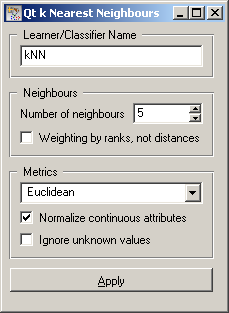

This is documentation for Orange 2.7. For the latest documentation, see Orange 3.
k-Nearest Neighbours Learner¶

k-Nearest Neighbours (kNN) learner
Signals¶
Inputs:
- Examples (ExampleTable)
A table with training examples
Outputs:
- Learner
The kNN learning algorithm with settings as specified in the dialog.
- KNN Classifier
Trained classifier (a subtype of Classifier)
Signal KNN Classifier sends data only if the learning data (signal Examples is present.
Description¶
This widget provides a graphical interface to the k-Nearest Neighbours classifier.
As all widgets for classification, it provides a learner and classifier on the output. Learner is a learning algorithm with settings as specified by the user. It can be fed into widgets for testing learners, for instance Test Learners. Classifier is a kNN Classifier (a subtype of a general classifier), built from the training examples on the input. If examples are not given, there is no classifier on the output.
Learner can be given a name under which it will appear in, say, Test Learners. The default name is “kNN”.
Then, you can set the Number of neighbours. Neighbours are weighted by their proximity to the example being classified, so there’s no harm in using ten or twenty examples as neighbours. Weights use a Gaussian kernel, so that the last neighbour has a weight of 0.001. If you check Weighting by ranks, not distances, the weighting formula will use the rank of the neighbour instead of its distance to the reference example.
The Metrics you can use are Euclidean, Hamming (the number of attributes in which the two examples differ - not suitable for continuous attributes), Manhattan (the sum of absolute differences for all attributes) and Maximal (the maximal difference between attributes).
If you check Normalize continuous attributes, their values will be divided by their span (on the training data). This ensures that all continuous attributes have equal impact, independent of their original scale.
If you use Euclidean distance leave Ignore unknown values unchecked. The corresponding class for measuring distances will compute the distributions of attribute values and return statistically valid distance estimations.
If you use other metrics and have missing values in the data, imputation may be the optimal way to go, since other measures don’t have any such treatment of unknowns. If you don’t impute, you can either Ignore unknown values, which treats all missing values as wildcards (so they are equivalent to any other attribute value). If you leave it unchecked, “don’t cares” are wildcards, and “don’t knows” as different from all values.
When you change one or more settings, you need to push Apply, which will put the new learner on the output and, if the training examples are given, construct a new classifier and output it as well.
Examples¶
This schema compares the results of k-Nearest neighbours with the default classifier which always predicts the majority class